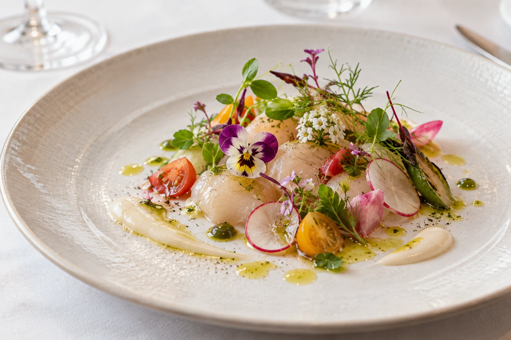
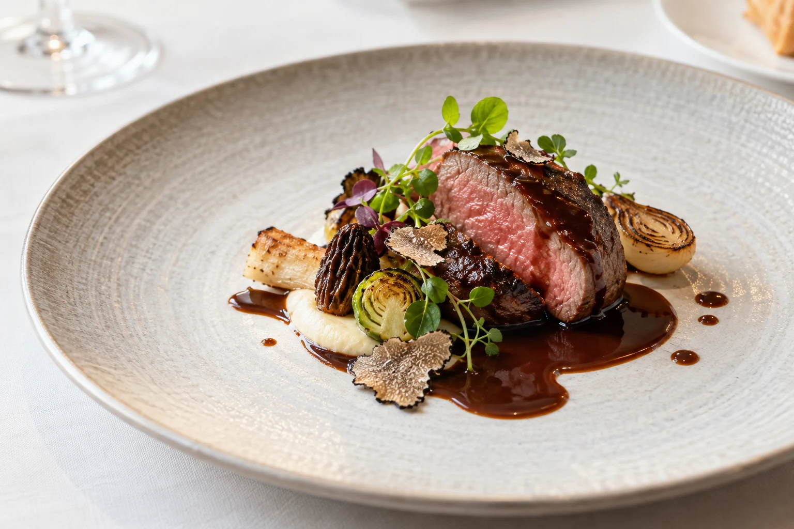
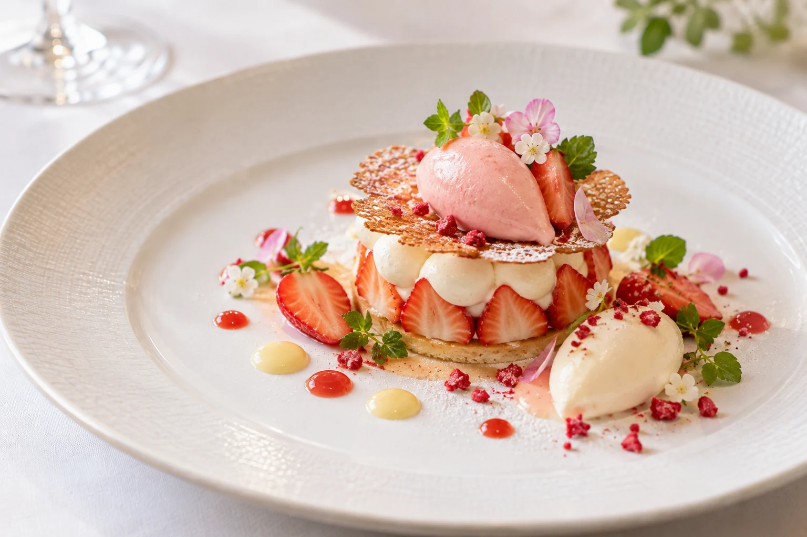
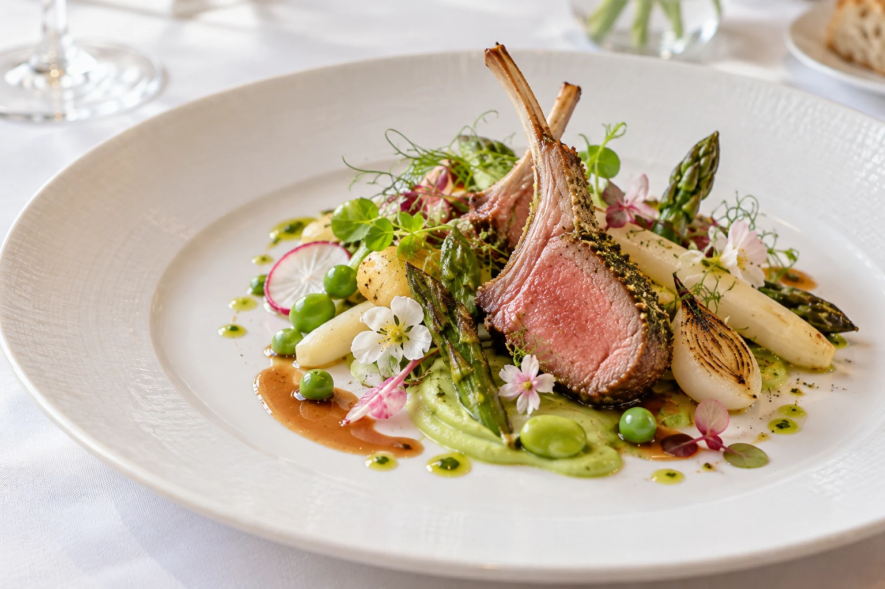

01
Appetizer
季節の前菜
瑞々しい野菜と魚介の繊細な味わいを重ね、コースの始まりを軽やかに彩ります。
Menu
季節の恵みを映したコースをご用意しています。
Seasonal Course
旬を迎えた食材の個性を生かし、前菜、メイン、デザートへと穏やかに余韻がつながるコースに仕立てます。

01
Appetizer
瑞々しい野菜と魚介の繊細な味わいを重ね、コースの始まりを軽やかに彩ります。

02
Main Dish
素材の持つ力強さを引き出しながら、香りとソースの調和を丁寧に組み立てた一皿です。

03
Dessert
果実の香りと穏やかな甘さが広がる、食事の余韻を結ぶデザートをご用意します。

Past Course
やわらかな仔羊のローストに、アスパラガスや豆などの春野菜を添えた季節の一皿。素材の香りをつなぐ繊細なソースとともにご提供しました。
過去にご提供したコースの一例です。